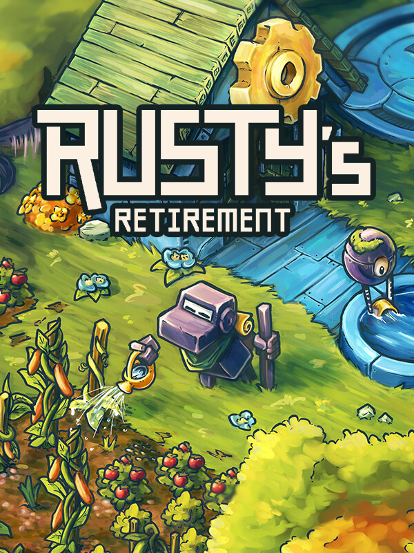

Rusty's Retirement
Rusty's Retirement
Details
|  | |
| Playtime | 6d 19h 3m 0s |
| Last Activity | 2024-08-26 19:23:52 |
| Added | 2024-06-27 18:32:43 |
| Modified | 2024-06-27 18:32:55 |
| Completion Status | Played |
| Library | Steam |
| Source | Steam |
| Platform | PC (Windows) |
| Release Date | 2024-04-26 |
| Community Score | |
| Critic Score | |
| User Score | |
| Genre | Indie Simulator Strategy |
| Developer | Mister Morris Games |
| Publisher | Mister Morris Games |
| Feature | Single Player |
| Links | Steam Discord Official YouTube |
| Tag | |
Description
Rusty's Retirement is an idle-farming simulator designed to sit at the bottom of your screen allowing you to work on other tasks while caring for your farm!

Grow crops:
Plant crops and watch Rusty get to work as he waters, nurtures, and harvests. Unlock new crops as you progress, from crispy carrots to ripe tomatoes.
Produce biofuel:
Use crops to produce clean and energy-efficient biofuel, a vital robot power source. Sell biofuel to other machine inhabitants and reinvest the money into expanding your farm.
Automate with robots:
Deploy a team of cute little robots to assist with planting, watering, and harvesting. Customize and upgrade your helper bots to increase efficiency.

Multitasking:
Rusty's Retirement is built to sit comfortably at the bottom of your screen allowing you to do other tasks while caring for your farm. Zoom in or out for a less distracting view, or alternatively turn on 'Focus Mode' which slows down crop production.
Vertical mode:
You can also create a new vertical farm that sits comfortably at the side of your screen.
Twitch Integration available:
Streamers and viewers can build a farm together. Viewers can control what task their robot should focus on through chat commands like !plant !water !harvest.


Grow crops:
Plant crops and watch Rusty get to work as he waters, nurtures, and harvests. Unlock new crops as you progress, from crispy carrots to ripe tomatoes.
Produce biofuel:
Use crops to produce clean and energy-efficient biofuel, a vital robot power source. Sell biofuel to other machine inhabitants and reinvest the money into expanding your farm.
Automate with robots:
Deploy a team of cute little robots to assist with planting, watering, and harvesting. Customize and upgrade your helper bots to increase efficiency.
Multitasking:
Rusty's Retirement is built to sit comfortably at the bottom of your screen allowing you to do other tasks while caring for your farm. Zoom in or out for a less distracting view, or alternatively turn on 'Focus Mode' which slows down crop production.
Vertical mode:
You can also create a new vertical farm that sits comfortably at the side of your screen.
Twitch Integration available:
Streamers and viewers can build a farm together. Viewers can control what task their robot should focus on through chat commands like !plant !water !harvest.
A friend of mine is also making a sims version: